Crossmind basic playlist
https://www.youtube.com/playlist?list=PLgO2ChD7acqHzccBuhAGw8dTPLnR1E3QB
Procedural Low poly game level
https://www.youtube.com/watch?v=b8mrdyJ4kO8
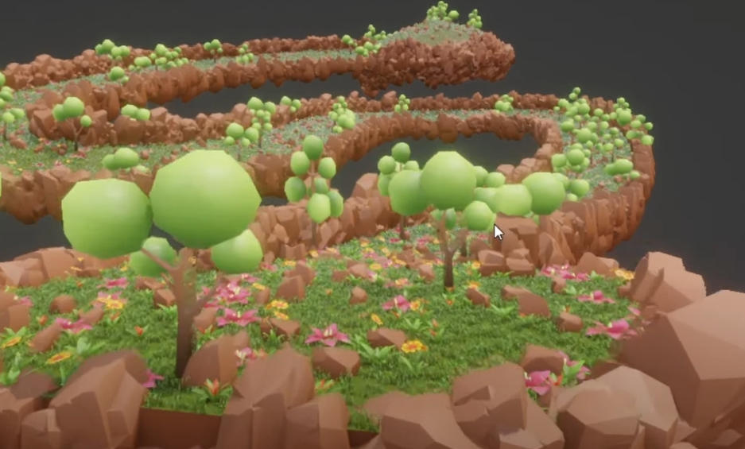
Interesting way of placing foliage
https://www.youtube.com/watch?v=IH9VkqIraQI
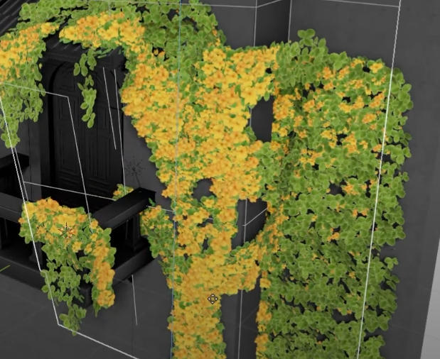
Cool raycast trick
https://www.youtube.com/watch?v=pZrDdR98tEE
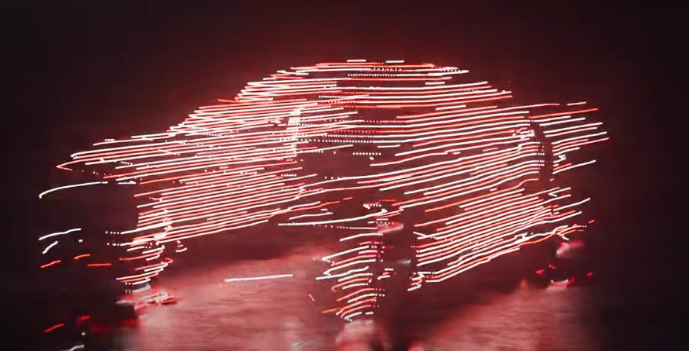
Procedural buildings
https://www.youtube.com/watch?v=59PeIGmZQdY&t=201s
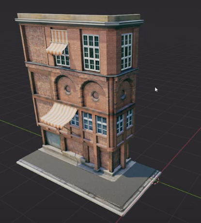
Procedural Assets
https://www.youtube.com/watch?v=m2FflCg6BTE
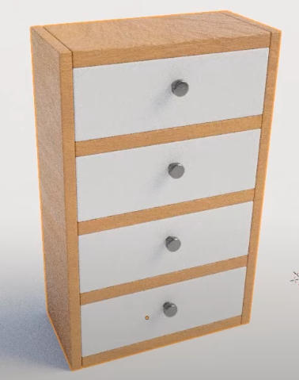
https://www.youtube.com/watch?v=XSkaM-8Vgz8&list=PLdFfFRXT0K_hMTsT00-Oxe95V9-u3mwiv&index=12
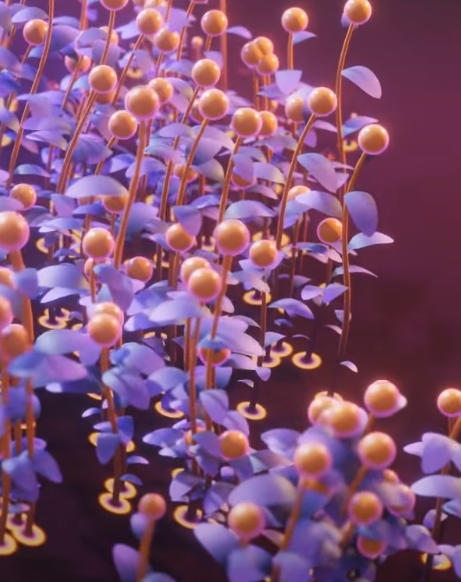
https://www.youtube.com/watch?v=JfKQ8m3ZfJM
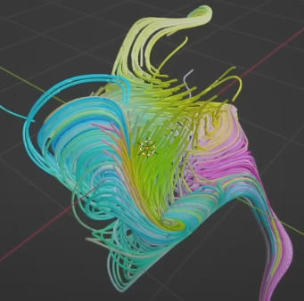
Traffic system
https://www.youtube.com/watch?v=yqTXiw6MJgI&t=537s
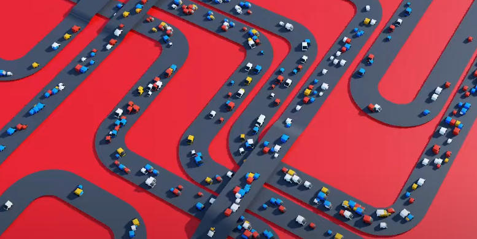
procedural fish anim
https://www.youtube.com/watch?v=lvHLQGUo-y4&t=31s
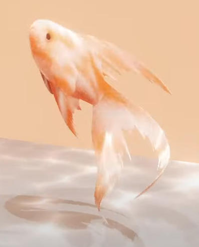
wave with instances
https://www.youtube.com/watch?v=DZA8bIO5JNo
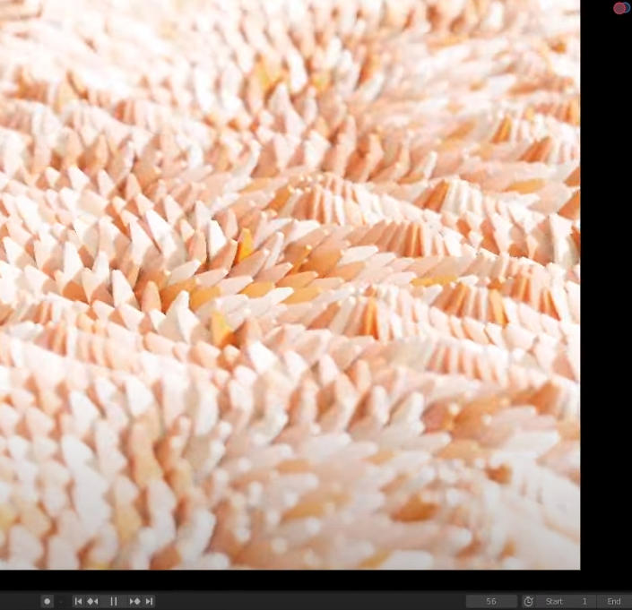
Grass scatter
https://www.youtube.com/watch?v=5xBNRvuHBJU
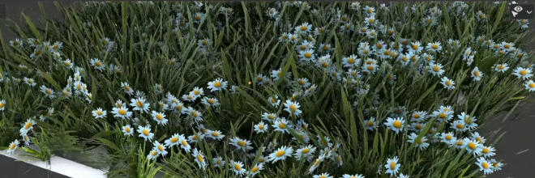
Moving instances
https://www.youtube.com/watch?v=NVKrucXJbC4&t=153s
geo nodes selection
https://www.youtube.com/watch?v=yUPKODvGOdA
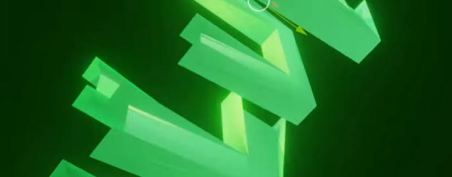
uv maps and textures in geo nodes
https://www.youtube.com/watch?v=eJoctLJJmn4
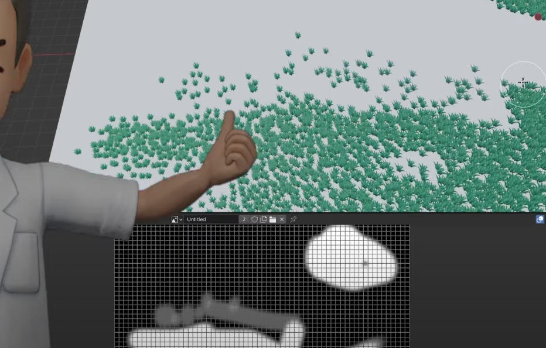